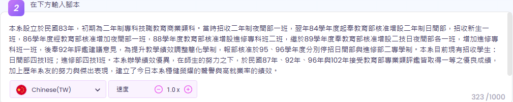
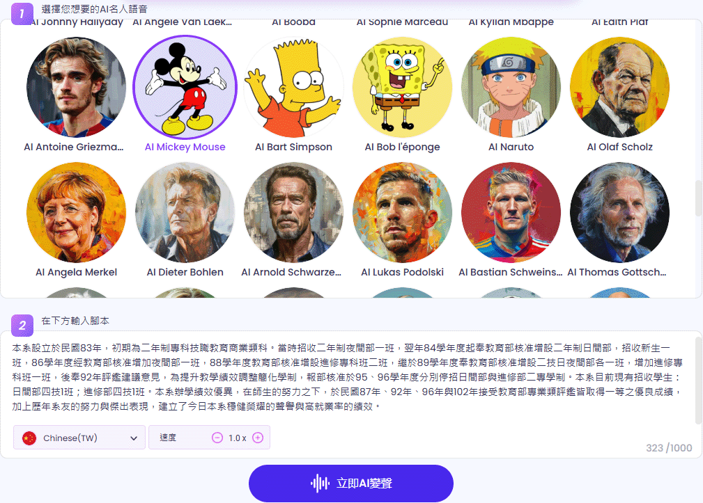
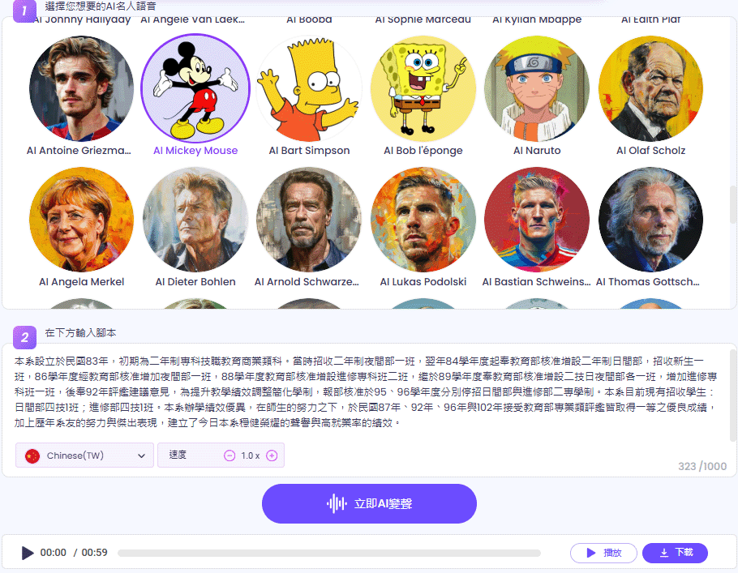

Vidnoz AI提供名人聲音生成功能，讓使用者輕鬆模仿或生成特定名人的聲音。
以下是 Vidnoz AI 變聲器的基本流程：
輸入想讓 AI 朗讀的文字，這段內容將以名人的聲音進行模擬。
AI 會分析照片，自動生成嘴部、臉部動作，使其與語音同步。
Vidnoz AI 透過深度學習與語音合成技術，分析聲音特徵，生成與名人聲音相似的音訊。
生成的語音可下載為 MP3、WAV 格式，適用於娛樂、模仿影片、配音、廣播等。
Vidnoz 提供的 AI 變聲器可以模仿名人聲音，並且是免費的。
用戶可以輕鬆生成並下載所需的b語音檔案。提供的語音類型包括
名人語音、女性語音、鬼面語音和機器人語音等，
並支持多位名人的語音模仿。